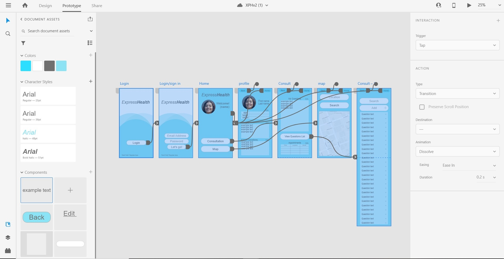

Artifact
Type text here
Project Description
In this project we, Prestige Worldwide, are designing an application to assist people with medical enquires. There are many features we will be implementing in our application, editable QPLs, recording features, being able to locate a general practitioner using GPS functions and keeping track of medical appointments with a calendar feature. The main feature we are innovating is having editable QPLs, which will allow the users to edit and add their own questions to the QPL.
I (Aden) have taken on the role of UI designer, and I have been using Adobe XD v34.1 to design the prototype for our application. I am hoping to achieve an easy to use and effectively helpful design that is aesthetically pleasing and easy to navigate, using a light blue and a medium grey as the main colours for the design.
Adobe XD is a great program for wireframing web and app designs. It is quite easy to use and provides access to several plugins to help the designer with design and functionality. Plugins that I have used are Widgets For XD for the Navbar and Fancy Maps for the map/GPS.
The application will go through alpha and beta stages with users testing for each before a final version is released. The final version will receive updates to fix any bugs, improve functionality and add more questions to the always growing question prompt list. The alpha stage will be basic navigation through the app with editable profile, appointment and calendar, editable consultation page where the user can add questions, they would like to ask their doctor from a question prompt list, and their own questions with an option for editing QPL questions.
The editable QPLs are something that other apps does not have available for users. We believe that having the option to select from a list of questions and being able to add and edit your own questions will help users to get the best possible advice from their next GP visit. The editable QPL will give the user a more unique and user-friendly experience, this is an important feature that separates Express Health from other health and medical related apps.
The home page will allow the user to access each of the pages, Consultation, Map and Profile, and will be click-able to access each page. This is to have an easy navigation process throughout the app for users who are less tech savvy and general ease of use.
For the colour scheme of the design, I chose a light blue, white and grey. Blue is a primary colour that promotes logic, reason and intellectual thought (Kurt and Osueke (2014). This colour would stimulate the users’ brains and moods, preparing them for the app’s purpose, information sharing, management and analysis. I used grey for lines to match the light nature of the blue and white for the larger backgrounds. These three colours are aesthetically pleasing and work well together.
The profile page will be able to be edited to keep track of the user's basic information such as age, height, weight as well as any known medical conditions and allergies they may have. This information will be able to be edited and updated by the user themselves. In later versions this information may be shared with the user’s doctor, thus bettering the results and experience of the user.
The calendar page will be important for keeping track of appointments, this will be edited by the user to input their appointment details. In the alpha stage it will have the basic calendar and an appointment schedule detailing when the appointment is and with which doctor. In future versions this could be changed to include more information.
The consultation page will be a focal point of the Express Health app, this is where the user will be able to access and choose, edit and add their own questions. The user will be able to make their own list of questions they will want to ask their doctor during a consultation. Being able to edit and add their own questions will make it a more individual, personal experience for the user. This will be able to help the user with difficult and potentially embarrassing questions. The question prompt list is a key element to make this app effective and help users achieve the best possible results from consultations.
The map is a useful feature for locating and getting directions to a GP or doctors’ offices in the immediate local area, without having to rely on google maps. Having this function in the app itself correlates with the overall theme of ease of use, being able to locate the doctor's office without having to switch between apps.
Throughout the design and wireframing process, I have been changing and experimenting with potential design details like the simple bubble design of the opening page and with the grid layouts for text information. This is to maintain ease of use and set a familiarity with text input areas. I used Arial for the font throughout because it is easy to read and has a smooth typeface.
Reference:
Kurt, S & Osueke, K K 2014, 'The effects of color on the moods of college students', Sage Open, vol. 4, no. 1, viewed 10 November 2020, SAGE Open Access Journals database.
Overview
Type text here
Detailed Description
Aims
The aim is to construct a smartphone app prototype in Adobe XD to display our vision for Express Health and to show the codes we plan to use for creating the app. Express Health’s purpose is to help patients be more expressive with their HCPs and to reliably record medical consultations for patients. To achieve this, we have set out the following goals that the prototype should display: Being able to create personal accounts, accepting user input for basic personal information, being able to edit and use the editable QPLs which also includes the recording features, being able to edit consultation times in the calendar feature and being able to use the geolocation feature. The codes that will be used to program these features will be included in the Plans and Progresses section.
Personal Accounts
Personal accounts are an important feature to have, this stores the user’s personal information, such as their current height, weight and age, as well as allowing them to input any know allergies they have, i.e. penicillin or other types of medications, and any known medical conditions they may have, i.e. Arthritis or Asthma.
The Question Prompt List
The Question Prompt List is the main focus of ExpressHealth. For this feature we want to have a vast number of QPL questions available for the user, covering many medical areas. This is to help the user during a consultation, providing them with questions to ask their HCP. The user will also be able to edit, add and record their own questions, this is an innovation of the QPL system and will help the users, for example if they have a question that they can’t find in the QPL database.
Calender
The calendar feature will allow the user to store and edit their appointment information, this will include the time, date and doctor, that their appointment is with. An element of this feature will be the app sending push notifications to remind the user of an upcoming appointment. This feature is to help the user to keep track of appointments.
Geolocation
The Geolocation will be used for a map element, this map is for the user to easily locate and access directions to GPs and medical centres in their local area, using the IP location of the user. The idea behind this was to allow the user to access a direct map rather than having to switch in between apps, this is for convenience to the user.
Plans and Progress
Type text here
Roles
When it comes to making an app there are many different roles, Deon and Mya are the Lead Developers, leading us in the right direction and making sure deadlines are met. Aden is the UI Designer and is responsible for the design and prototyping of the app. Glenn is the Technical Developer, reviewing the work and assisting the others with research and documentation.
Prestige Worldwide is a small team of only four people, as well as our defined roles, we take on multiple other roles simultaneously. We all contribute to the research required and to the user experience. It has taken some practice, but we believe this is what will work. The larger tasks, such as research and UX are shared amongst the team to make sure the workload is more evenly spread and delegated. The defined roles that we have were chosen ourselves are based on the strengths that we already possess.
We have taken on both defined roles and undefined, the reason behind that is to focus our strengths on the individual parts such as the organisation of work and direction of the project, the design of the app itself and technical application, then tackling the bulk tasks as a team.
Scope and Limits
Type text here
Tools and Technologies
Type text here
Testing
The testing will start with automated user interface testing to test the functionality of the app, this is to make sure all the elements are functioning correctly. Once this is completed the next step is prototype testing. This is done but setting tasks for the users to test the features and elements of the app, this will be done using Preerly User testing, a user testing website which is available as a plugin for Adobe XD, allowing the testers to set up tests and test panels easily, while at the same time collecting the data from the tests and test panels.
The testing tasks are kept simple so to not overload the information we receive, making the results more effective. Once collected, the information will help us make the best possible improvements to the QPL system and make any required changes. In the test, we will task the users with creating a basic profile, and then to add questions to the “My Questions” area and get the testers to add and edit their own questions.
Testing will be ongoing as new features, changes in functionality and design will continue to happen. It will be considered successful for as long as we can continue to gather data and make effective improvements to the ExpressHealth app.
Timeframe
Type text here
Risks
Type text here
Group processes and communications
Type text here